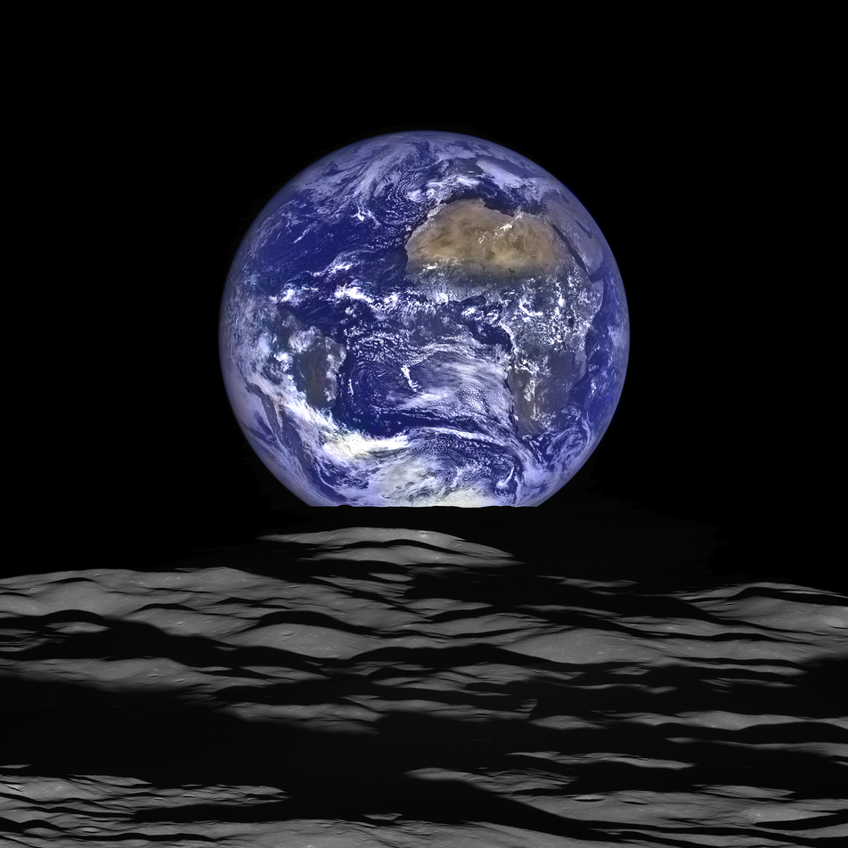

Space exploration
Telescopes, satellites and robotic spacecraft allow scientists to investigate places that are too distant, too faint or too challenging for people to visit.

Nebulae: stellar nurseries
Image: NASA/ESA/CSA/STScI

Earth: our home planet
Image: NASA/GSFC

Mars: a world of exploration
Image: NASA/JPL-Caltech/MSSS
Nebulae
Nebulae are vast clouds of gas and dust. Some are places where new stars form; others are material released by stars near the end of their lives. Their shapes and colours can reveal the physical processes taking place within them.
Galaxies
A galaxy is a large system of stars, gas, dust and dark matter held together by gravity. The Milky Way is the galaxy that contains our Solar System. Galaxies occur in a range of shapes and sizes.
How we explore
Space telescopes observe wavelengths that Earth's atmosphere can absorb or distort. Ground-based observatories provide another important view, while spacecraft can make measurements close to planets, moons and smaller bodies.
Robotic missions use cameras, spectrometers and other instruments to collect data. Scientists compare these measurements with observations from Earth to build a clearer picture of distant environments.
Listen and read
Listen to NASA's sonification of the Webb telescope's Cosmic Cliffs image data. It translates image brightness and position into sound; it is not sound recorded in space.